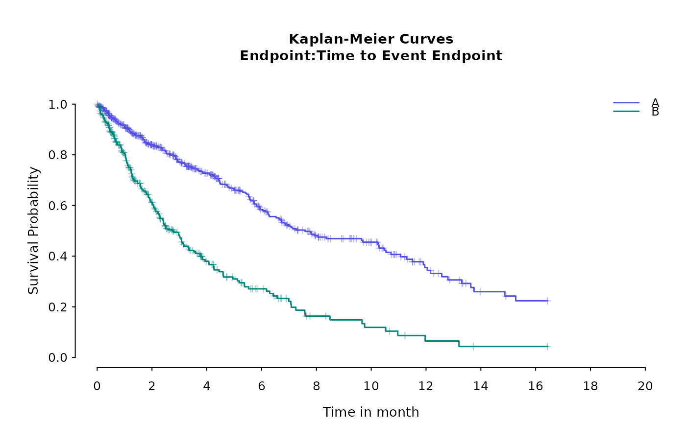
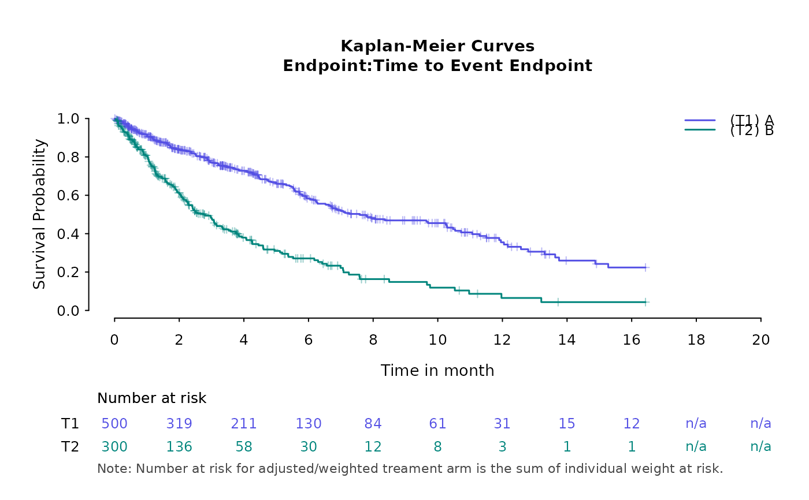

This function can generate a basic KM plot with or without risk set table appended at the bottom. In a single plot,
it can include up to 4 KM curves. This depends on number of levels in 'treatment' column in the input data.frame
kmdat
Usage
basic_kmplot(
kmdat,
endpoint_name = "Time to Event Endpoint",
time_scale = NULL,
time_grid = NULL,
show_risk_set = TRUE,
main_title = "Kaplan-Meier Curves",
subplot_heights = NULL,
suppress_plot_layout = FALSE,
use_colors = NULL,
use_line_types = NULL,
use_pch_cex = 0.65,
use_pch_alpha = 100
)Arguments
- kmdat
a
data.frame, must consisttreatment,time(unit in days),n.risk,censor,surv, similar to an output frommaicplus:::survfit_makeup- endpoint_name
a string, name of time to event endpoint, to be show in the last line of title
- time_scale
a string, time unit of median survival time, taking a value of 'years', 'months', 'weeks' or 'days'
- time_grid
a numeric vector in the unit of
time_scale, risk set table and x axis of the km plot will be defined based on this time grid- show_risk_set
logical, show risk set table or not, TRUE by default
- main_title
a string, main title of the KM plot
- subplot_heights
a numeric vector, heights argument to
graphic::layout(),NULL by default which means user will use the default setting- suppress_plot_layout
logical, suppress the layout setting in this function so that user can specify layout outside of the function, FALSE by default
- use_colors
a character vector of length up to 4, colors to the KM curves, it will be passed to
coloflines()- use_line_types
a numeric vector of length up to 4, line type to the KM curves, it will be passed to
ltyoflines()- use_pch_cex
a scalar between 0 and 1, point size to indicate censored individuals on the KM curves, it will be passed to
cexofpoints()- use_pch_alpha
a scalar between 0 and 255, degree of color transparency of points to indicate censored individuals on the KM curves, it will be passed to
cexofpoints()
Examples
library(survival)
data(adtte_sat)
data(pseudo_ipd_sat)
combined_data <- rbind(adtte_sat[, c("TIME", "EVENT", "ARM")], pseudo_ipd_sat)
kmobj <- survfit(Surv(TIME, EVENT) ~ ARM, combined_data, conf.type = "log-log")
kmdat <- do.call(rbind, survfit_makeup(kmobj))
kmdat$treatment <- factor(kmdat$treatment)
# without risk set table
basic_kmplot(kmdat,
time_scale = "month",
time_grid = seq(0, 20, by = 2),
show_risk_set = FALSE,
main_title = "Kaplan-Meier Curves",
subplot_heights = NULL,
suppress_plot_layout = FALSE,
use_colors = NULL,
use_line_types = NULL
)

# with risk set table
basic_kmplot(kmdat,
time_scale = "month",
time_grid = seq(0, 20, by = 2),
show_risk_set = TRUE,
main_title = "Kaplan-Meier Curves",
subplot_heights = NULL,
suppress_plot_layout = FALSE,
use_colors = NULL,
use_line_types = NULL
)
